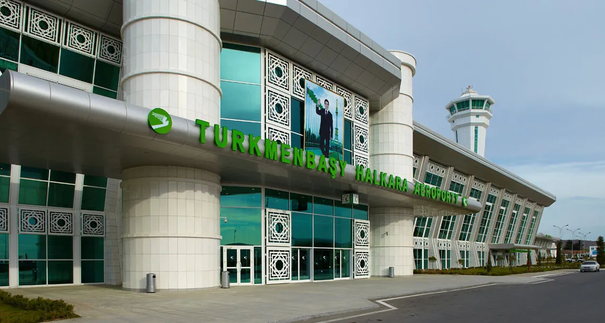
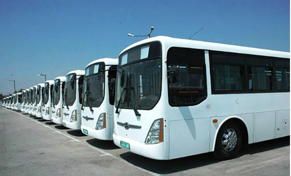
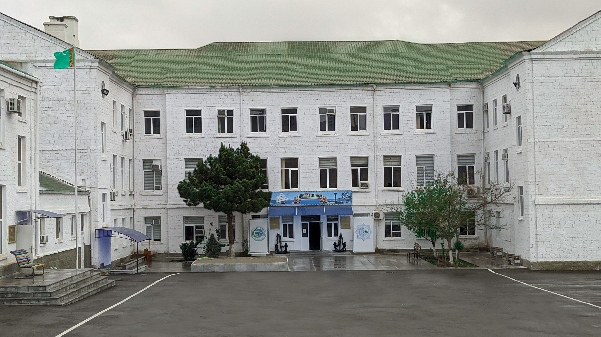

Ykdysadyýeti
Günbatar Türkmenistanda esasy nebit we tebigy gaz gorlary bar, Türkmenistanyň iň uly nebiti gaýtadan işleýän zawody Türkmenbaşyda ýerleşýär.
Sport
Şäherde Şagadam stadiony bar we professional Şagadam FK (futbol kluby) ýerleşýär.
Ulag ulgamy
Türkmenawtoulaglary gullugy tarapyndan dolandyrylýar. Häzirki wagtda şähere halkara howa menzili we milli demir ýol hyzmatlary, şäher awtobuslary, mikroawtobuslar, taksi, welosiped zolaklary hyzmat edýär.
Demir ýol menzili
1895-nji ýylda binagär Alekseý Leontiýewiç Benua tarapyndan guruldy. Wokzal binasy tutuş Merkezi Aziýa demirýolunda iň gözel ýerleriniň biridir.
Demir ýol menzilinde gündelik 605/606 belgili otly Aşgabat şäherine gidýär.


Türkmenistan howa ýollary
Döwlet eýeçiligindäki “Türkmenistan howa ýollary” 1992-nji ýylyň 4-nji maýynda döredildi.

Awtobuslar
Häzirki wagtda Hyundai Aero City kysymly awtobuslar şähere hyzmat edýär.

Bilim
Türkmenistanyň deňiz we derýa ulaglary zerurlygy üçin hünärmenleri taýýarlaýan Deňizçilik orta hünär okuw mekdebi bar.Hünär boýunça okuw möhleti tölegli esasda 2 ýa-da 2,5 ýyl.